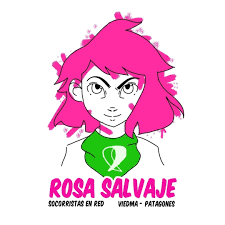

Socorristas en Red: Abrazar el territorio, disputar los sentidos

Nacida en 2012 e impulsada inicialmente por la Colectiva Feminista La Revuelta de Neuquén, la red nacional consolida un compromiso histórico e inquebrantable: acompañar abortos seguros, feministas y amorosos en cada rincón del país.
El socorrismo se plantea no solo como una práctica de acompañamiento e información validada científicamente frente a la clandestinidad y el abandono estatal, sino como una herramienta política de transformación social que rompe con la culpa, el estigma y la soledad impuestas por el patriarcado.
El hacer en la comarca: Colectiva Rosa Salvaje
En nuestra comarca (Viedma y Carmen de Patagones), este hacer amoroso, acuerpado y feminista se sostiene activamente a través de la colectiva local Rosa Salvaje.
Desde las líneas telefónicas de consulta hasta los encuentros cara a cara, las socorristas construyen soberanía sobre los cuerpos y las decisiones, tejiendo tramas comunitarias que garantizan información segura, contención afectiva y defensa irrestricta de los derechos conquistados.
Principios rectores
Autonomía, confidencialidad, horizontalidad y confianza mutua. El socorrismo feminista enseña que cuando una mujer o persona gestante decide abortar, no está sola: se activa una red solidaria que abraza, acompaña y legitima la potencia de decidir.